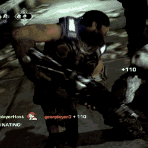
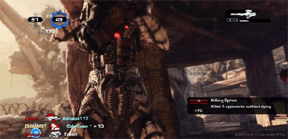

The evaluation of your progress is quite simple. In fact, there are a few different ways you can evaluate how well
you did. Some are provided by the game, and some require your personal goals.
- Score
- Score is the most basic evaluation, and it is provided by the game. Score is determined by many different factors.
Firstly, killing and downing enemies gives the player more points, as well as reviving allies. Take note that getting
downed subtracts points. Secondly, the number of players that survive the round adds points to the team's total score.
And lastly, difficulty multiplies the total score by a number depending on the difficulty level. Since you are playing
on Insane, the multiplier maxes out at 2.5x. Mutators also multiply the score depending. If the mutator makes the game
harder, it adds to the multiplier, if it makes the game easier, it reduces the multiplier.
- Cash
- Cash is another way to score yourself. It is probably the most preferred way. The amount of cash earned in each round
is shown at the end of that round, as well as an added total of all the cash earned in the session. Though cash is constantly
spent in the game on weapons and fortifications, the total numbers at the end of the rounds are not subtracted and only show
how much was gained. Cash is simply earned by killing enemies. Each type of enemy is worth a certain amount of cash. Downs also
give cash, but very little. Assists and kills are split between players based on how much total damage each player dealt to the
enemy. So no, you will not get more cash than your wingman by stealing kills and getting the final shot at en enemy to kill it.
The one thing that adds points and cash to your kills is executions. Executions are always fun and are worth doing if you are
near enough to a downed enemy. Have fun Executing! But don't get Executed!
 
- Fortify Skill Level
- This score system is not about killing enemies, but rather about creating fortifications. As you create and repair and upgrade
fortifications, your level for that fortification increases. Level 8 is the maximum for each type. All it does it unlock better versions
of the fortification and make it cheaper to build and repair.
- Gamer Score
- Gamer Score is based on Achievements received on the gaming platform for doing certain things, like beating Horde on Insane.
The Gamer Score is mostly favored by online players because the entire world can see their achievements and Gamer Score. But even a
local offline player would be very proud to get the achievement by winning Horde on Insane.
- Flawless Completion
- This is mostly a personal way to evaluate yourself. If you a very skilled gamer, you may strive to win all 50 waves without a single
failure. Or you may try and win without dying a single time. These are extremely difficult to do, but many pro gamers my try to do this
for fun.